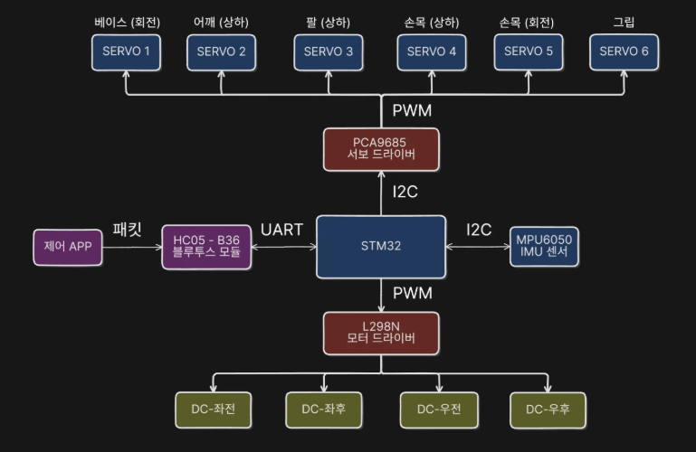
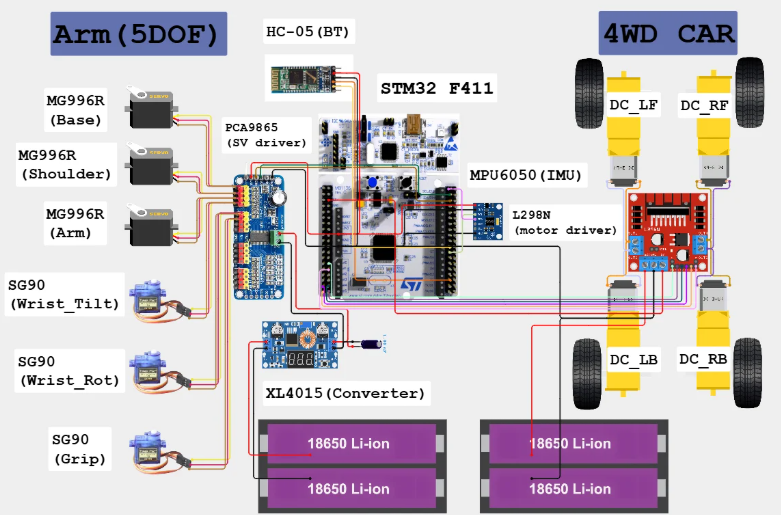

PROJECT 01 / EMBEDDED ROBOT
STM32F411C · HALL298N 4WD
PCA9685하드웨어 설계
ChaPaRi — 모바일 물품 회수 로봇
스마트폰으로 이동·접근·잡기·운반을 수행하는 4WD 차량 + 5축 로봇팔 통합 로봇.
- 목표
- 이동만 가능한 RC카와 작업영역이 좁은 고정 로봇팔을 결합해 “접근→잡기→운반→놓기”를 하나의 로봇으로.
- 내 역할
- RC카 주행 제어 · 로봇팔 서보 각도 제어 · 하드웨어 설계·전원 회로
- 팀 구성
- 팀 프로젝트 · 임베디드 제어/하드웨어 파트 담당
담당 구현
- 주행 L298N으로 좌우 DC모터 4개를 그룹 차동 구동. TIM2 20 kHz PWM + 방향 GPIO로 전진·후진·회전·곡선 주행 구현.
- 로봇팔 PCA9685(I2C) 6채널 50 Hz 서보 PWM으로 MG996R×3 · SG90×3 구동. 앱 각도(−90~+90°)를 서보 각도로 매핑하는 기초 제어.
- 하드웨어 서보용 · 차량용 2S 배터리 팩 전원 분리 설계. XL4015 강압, PCA9685 V+에 1000 µF 안정화, 공통 GND 결선, STM32 핀 배치까지 직접.


검증 · 결과
- 앱 명령으로 차량 주행 + 로봇팔 파지·운반 동작 실동작 성공
- 전원 분리 · 공통 GND 결선 검증, 로봇팔 6축 개별 구동 확인
- STM32 Flash 18.4% (72 KB / 384 KB) · RAM 22.2% 사용
협업 범위
Yaw PID(직진 안정화) · 서보 3점 보정 · S-curve · 티칭 시스템 · Flutter 앱 ·
16바이트 통신 프로토콜 설계는 팀원이 담당했습니다.
배운 점
문제가 발생했을 때 원인이 소프트웨어인지 하드웨어인지 구분하는 과정이 생각보다 어려웠습니다. 하지만 원인을 하나씩 확인하고 해결하면서 시스템 전체를 바라보는 시야를 넓힐 수 있었습니다. 특히 IMU 기반 PID 제어를 가까이서 다루고 로봇팔 서보 구동을 직접 구현해보며 센서와 제어 기술에 대한 흥미가 커졌습니다. 제한된 환경에서 소프트웨어와 하드웨어를 통합하고 성능을 개선하는 과정에서 큰 보람을 느꼈고, 앞으로 더 다양한 센서를 활용한 제어 시스템을 만들어보고 싶어졌습니다.